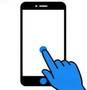
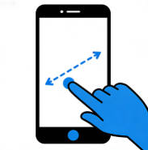
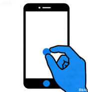
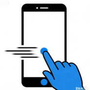
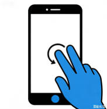

React Native Gesture Responder System #
Design is not just what it looks like and feels like. Design is how it works.
用户和软件的唯一“触点”就是交互行为——鼠标事件、触摸事件、手势，决定了用户能不能顺利把“想做的事”变成“软件真的帮他做到”。处理好这些事件，就是在直接放大产品的可用性、效率和信任感；处理不好，再强大的功能也会被用户放弃。
因为刚接触手机开发，所以有必要了解 React Native Gesture Responder System。
常见触屏操作 #
tap #

点击操作，用单根手指（通常是食指）快速轻触屏幕后立即抬起，手指在屏幕上几乎没有位移
pan/drag #

拖动操作，用单根手指按住屏幕上的某个元素（如图标、滑块、窗口），保持按压状态并沿指定方向移动，移动完成后再抬起手指。
pinch/zoom #

捏合缩放操作，用两根手指（通常是拇指和食指）同时放在屏幕上，要么向中间收拢（捏合，缩小内容），要么向两侧张开（张开，放大内容）。
swipe #

滑动操作，用单根手指在屏幕上快速朝某个方向（左 / 右 / 上 / 下）滑动一段距离后立即抬起，手指不与任何元素绑定。
rotation #

用两根手指（通常是拇指和食指）同时放在屏幕上，以某一点为中心，顺时针或逆时针同步转动手指。
React Native Gesture Responder System #
为了处理这些手势操作，RN 内置一套 Gesture Responder System。这套系统决定了：
- 一个组件是否应该响应手势操作
- 组件如何响应手势
- 监听每个手势的生命周期
核心 API #
- onStartShouldSetResponder：决定组件是否要响应“按下开始”这个触摸事件。
- onMoveShouldSetResponder：决定组件是否要响应“移动过程中的手势”（例如拖动、滑动）。
- onResponderGrant：当组件被选中成为“当前手势响应者”时触发（相当于“开始接管这次手势”）。
- onResponderMove：在手指移动过程中持续触发，用来追踪手指的移动轨迹或位置变化。
- onResponderRelease：当手指抬起、这次触摸结束时触发。
- onResponderTerminate：当这次手势被中断、响应权被别的组件或系统抢走时触发（例如手势被父级拦截、来电话等情况）。
示例：
<View
onStartShouldSetResponder={() => true}
onResponderGrant={() => setMessage("Touch Started")}
onResponderMove={() => setMessage("Touch Moving")}
onResponderRelease={() => setMessage("Touch Released")}
>
<Text>{message}</Text>
</View>
react-native-gesture-handler #
react-native-gesture-handler: https://docs.swmansion.com/react-native-gesture-handler/docs/
react-native-gesture-handler 是一个用来处理复杂手势 的 React Native 库，它把手势的识别逻辑放在原生 UI 线程里，而不是 JS 线程里。为什么使用 react-native-gesture-handler 的另一个原因是原生的 api 处理一些常规操作比较麻烦，例如我们需要监听 drag 操作，触发 event handler，需要自己组合多个 api 判定是否触发了 drag 操作然后决定是否调用 handler。
我将通过一个示例说明这个库的使用方法。
可以将示例代码复制到 https://snack.expo.dev/ 运行，查看效果。（注意，需要在 package.json 中添加 react-native-gesture-handler 依赖）
import React from 'react';
import { View, Text, StyleSheet } from 'react-native';
import {
Gesture,
GestureDetector,
GestureHandlerRootView,
} from 'react-native-gesture-handler';
class App extends React.Component {
constructor(props) {
super(props);
this.state = {
lastEvent: 'None',
};
// 单击
this.singleTapGesture = Gesture.Tap()
.numberOfTaps(1)
.maxDuration(250)
.onEnd((_e, success) => {
if (success) {
this.setState({ lastEvent: 'Single Tap' });
}
});
// 双击
this.doubleTapGesture = Gesture.Tap()
.numberOfTaps(2)
.maxDelay(250)
.onEnd((_e, success) => {
if (success) {
this.setState({ lastEvent: 'Double Tap' });
}
});
// 双击 / 单击（二选一）
this.tapGestures = Gesture.Exclusive(
this.doubleTapGesture,
this.singleTapGesture,
);
// 长按
this.longPressGesture = Gesture.LongPress()
.minDuration(500)
.maxDistance(10)
.onEnd((_e, success) => {
if (success) {
this.setState({ lastEvent: 'Long Press' });
}
});
// 单指 pan
this.panGesture = Gesture.Pan()
.minPointers(1)
.maxPointers(1)
.minDistance(5)
.onStart(() => {
this.setState({ lastEvent: 'Pan start' });
})
.onUpdate(() => {
this.setState({ lastEvent: 'Panning...' });
})
.onEnd(() => {
this.setState({ lastEvent: 'Pan end' });
});
// pan / longPress（二选一，互斥）
this.panOrLongPress = Gesture.Exclusive(
this.longPressGesture,
this.panGesture,
);
// 双指缩放 pinch
this.pinchGesture = Gesture.Pinch()
.onStart(() => {
this.setState({ lastEvent: 'Pinch start' });
})
.onUpdate(() => {
this.setState({ lastEvent: 'Pinching...' });
})
.onEnd(() => {
this.setState({ lastEvent: 'Pinch end' });
});
// 最终组合：pinch + (pan or longPress) + (double / single tap)
this.composedGesture = Gesture.Simultaneous(
this.pinchGesture,
this.panOrLongPress,
this.tapGestures,
);
}
render() {
const { lastEvent } = this.state;
return (
<GestureHandlerRootView style={styles.root}>
<View style={styles.info}>
<Text style={styles.infoText}>Last event: {lastEvent}</Text>
<Text style={styles.infoText}>
Try: single tap, double tap, long press, pan (1 finger), pinch (2 fingers)
</Text>
</View>
<GestureDetector gesture={this.composedGesture}>
<View style={styles.box}>
<Text style={styles.boxText}>Gesture Area</Text>
</View>
</GestureDetector>
</GestureHandlerRootView>
);
}
}
export default App;
const styles = StyleSheet.create({
root: {
flex: 1,
justifyContent: 'center',
alignItems: 'center',
},
info: {
position: 'absolute',
top: 80,
alignItems: 'center',
},
infoText: {
fontSize: 16,
marginBottom: 4,
},
box: {
width: 250,
height: 250,
borderRadius: 16,
backgroundColor: '#b58df1',
justifyContent: 'center',
alignItems: 'center',
},
boxText: {
color: '#fff',
fontSize: 18,
fontWeight: '600',
},
});
GestureHandlerRootView #
负责定义一个可以触摸的容器，这个容器就是一个 View，所以默认的 flex 属性为 1，表示其内部所有的孩子节点都支持接受手势信号。
GestureDetector #
在 GestureHandlerRootView 内部可以通过 GestureDetector 监听手势事件。
<GestureDetector gesture={this.composedGesture}>
<View style={styles.box}>
<Text style={styles.boxText}>Gesture Area</Text>
</View>
</GestureDetector>
当手指在被 GestureDetector 包裹的 View 上滑过是，会触发 this.composedGesture 方法。
多手势同时触发 #
允许多种手势同时触发，通过 Gesture.Simultaneous 实现，例如：一边拖动图片一边缩放（Pan + Pinch）、旋转同时缩放（Rotation + Pinch）。
const gesture = Gesture.Simultaneous(panGesture, pinchGesture);
手势互斥 #
可以通过 Gesture.Exclusive 实现多个手势互斥：同一时间只允许一个手势成功，其他的会被取消。默认是谁先识别成功谁赢，通常写在前面的手势优先级更高，用于有冲突的手势，比如单击 vs 长按、单击 vs 双击 等。
// 单机和长按互斥
const tap = Gesture.Tap().onEnd(() => console.log('tap'));
const longPress = Gesture.LongPress().onEnd(() => console.log('long press'));
const gesture = Gesture.Exclusive(tap, longPress);
（完）